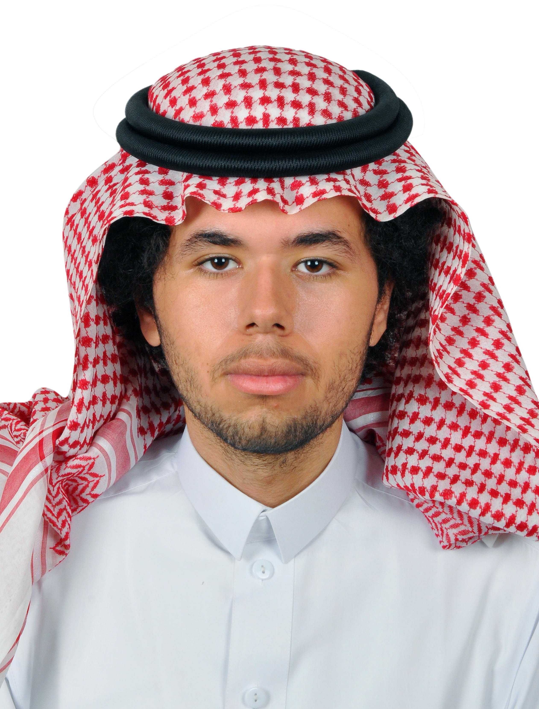

CCSW321 - Shahid Bahati
Hello, my name is
RAMI ALALLI
Cyber Security Specialist
My name is Rami, I am a 21 year old student specializing in Cyber Security at Jeddah University. I have a keen interest in the field and aspire to make a name for myself in the world of Cyber Security. With a strong academic background and a passion for learning, I am committed to enhancing my knowledge and skills to excell in this field.
18-May-2002
+966596250066
Jedddah, Saudi Arabia
Miraxuu
Education
I enrolled in Jeddah University in 2020 and was accepted into the Cyber Security major in 2022. I am currently in my second year of studies and have maintained a GPA of 4.8. My goal is to graduate with honors and pursue a career in Cyber Security. My favorite subjects revolve around object-oriented programming, and I have completed several projects that demonstrate my expertise in this area.
Projects
Hospital Appointment Application
A small system that allows you (A receptionist) to manage and control a patient's records and to appoint them to a list of doctors according to the needed specialty.
Car Rental Service Application
A system that lets you find an available car that properly seats you and your family and fits your needs
New Generation Attendance Database
A new generation of taking attendance by using an SQL Database by retina scans or fingerprints
School Management Application
A System that lets you manage a school by assigning teachers and students to classes